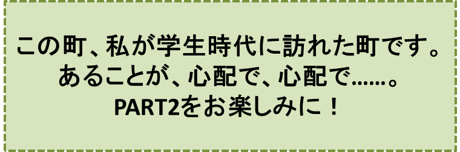

リンゴの木の神様とその弟子達-PART1-
『リンゴ並木のある町』の巻
笠原正雄
信州に日本でも指折りの美しい町があります。
大自然のふところ――日本アルプスの山々が遥かに見上げられ、雪解けの水が谷間から溢れ出てきてやがて一筋の川となるところ――に抱かれた町です。
大気はあくまでも澄み渡り、空は目の覚めるような青空。丘に燃える若草はお日様を一杯に浴びて輝きます。
大通りが大自然と見事な調和を保ちながら力強く走り、その両側にゆったりと立ち並んでいる純白の建物は、回りに沢山の緑の樹木色とりどりの花を伴なって、人々の目を楽しませてくれています。大都会の建物のように圧倒するほどの大きさはないけれど、人々の心に圧倒的な建築美を強く訴えるという点では、この町の建物に軍配が上がるでしょう。
ここで暮らしここを旅する人達は、雲一つなく晴れ上った朝これらの真っ白な建物が雪のように輝くのを見ると、どんな色にもまして白で良かったと思い、時の経つのも忘れいつまでも眺めているのでした。
目を転じて町の大広場を見ると、教会の黄金色の建物が目に入ります。その建物からは、毎朝鐘の音が静かに響き渡ります。人々は
“おっはよう！” “おっはよう”
と鐘の音(ね)に応えます。
この美しい町で人々が一番愛し自慢にしているもの……、それこそは子供達の作ったリンゴ並木です。
リンゴ並木は町の大通りを貫くように大きく成長し、子供達の胸はそれとともに希望に一層大きく膨らみます。大通りを歩く人々は、赤、青、黄色の見事なリンゴ達を見て思わず口もとをほころばせます。
晴れ上がった日曜日には何人かが集まると、たちまち輪になってリンゴの木の周りを手をたたき歌を唄いながら踊ります。
この町を訪れる人々は誰もが
“すばらしい! 日本一のリンゴ並木だ！”
と感嘆の声を上げてしまうでしょう。
このリンゴ並木は「リンゴ会」の子供達によって育てられています。
会長さんは中学二年の三郎です。
三郎は勿論のことリンゴ会全ての子供達は、アルプスおろしの空っ風に鍛えられて強い身体を持ち、美しい自然の中で育てられ、明るくリンゴのように輝くほっぺたが自慢の子供達です。
勇敢という言葉がぴったりの小学五年生の章介、元気一杯はつらつ小学六年生の修も、リンゴ博士の異名をとる中学二年生の晴子も誰もかも……“自然の子”です。
「リンゴ会」の子供達の愛情をたっぷり受けて、リンゴ並木は今年も見事な実を実らせ人々の目を楽しませています。
最初の年のことでしたが、子供達は一生懸命育ててきたリンゴ並木が余りにも見事に成長しましたので、誰もがその実をとるのをはばかり、赤、青、黄色の実をその緑の葉の中にいつまでもそのまま置いておこう、と考えたほどでした。
……しかしリンゴ達は、その枝を離れて子供達の手に持たれたとき、より一層美しく輝くものですよね。
「リンゴ会」の子供達は、毎週の土曜日日曜日の午後リンゴを取ることに決めました。
何故なら一週間の勉強が終わった後ですから、リンゴの木達が
“待ってましたよ！”
と大きな拍手で迎えてくれるようでしたし、いつまで遊んでいても
“さぁ、もうそろそろ、勉強しましょうね”
と、呼びかけもしないからです。
よく晴れた土曜日の午後ほど楽しいときはありません。思い思いに出来るだけ大きなリンゴを取って皆で輪になり、歌を唄いながらリンゴ並木の周りをぐるぐるぐるぐる回ります。
回り回って疲れた時には、もぎ取ったばかりのリンゴの甘酸っぱい実が彼らの喉を心地良く潤してくれます。
♪♪♪♪コーヒーブレイク♪♪♪♪
